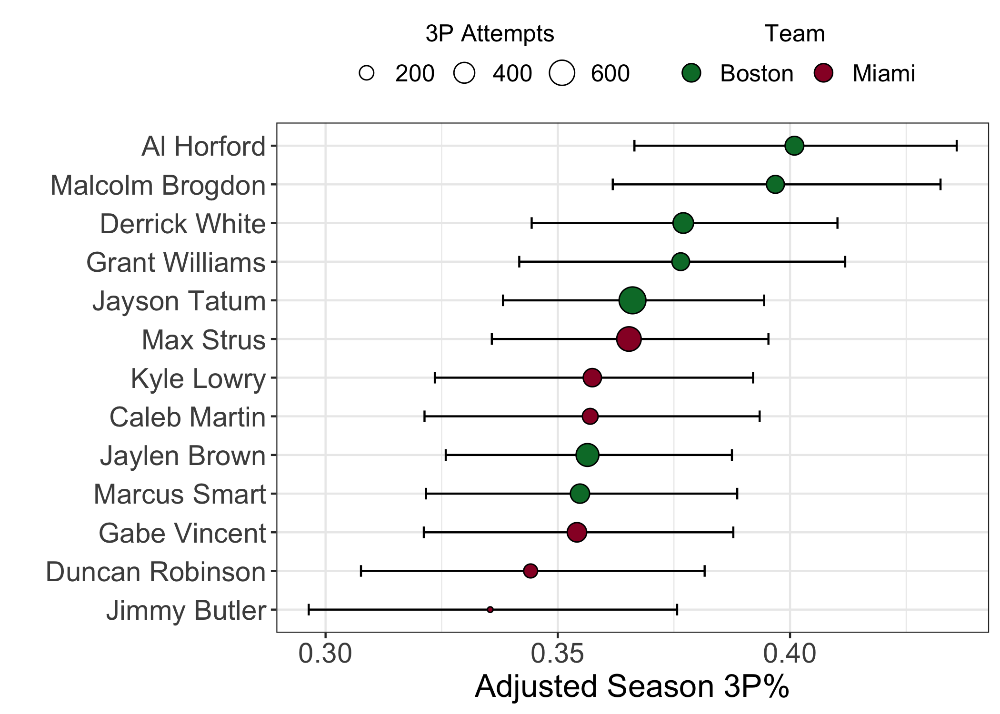

The 2023 ECF, the 3 point shot, and under/overperformance
Introduction
The 2022-2023 NBA season is over. The Denver Nuggets, this season’s Western Conference champions and Finals favorites, defeated the never-say-die Miami Heat in the Finals 4 games to 1. The Nuggets, led by the virtually unstoppable Nikola Jokíc (who averaged 30-13.5-9.5 per game across these playoffs), made relatively easy work of the 8-seed Heat. Nevertheless, the Heat’s impressive, and at times utterly dominant, run through both the 1-seed Milwaukee Bucks (4-1) and the 2-seed Boston Celtics (4-3) has already had significant consequences and could yet have more.
In the Eastern Conference Finals (ECF) against the Celtics, the Heat overturned double-digit deficits in the second halves of both Games 1 and 2 and went on to win them both. Game 3 was an emphatic 128-102 Heat victory. The Celtics won the next 3 games, evening the series at three games apiece and forcing a deciding Game 7 back in Boston. The Heat absolutely embarrassed the home team and silenced the TD Garden crowd with a 103-84 victory. Much has been said about how this ECF played out. Most of this commentary can be succinctly summarized: the Heat have “that dawg in ‘em”, and the Celtics simply do not. It’s hard not to be at least a little sympathetic to this argument. Another, more tangible, aspect of the series, however, was the apparent difference in 3 point shooting percentage (3P%) between the Heat and the Celtics. Per basketball-reference, the Celtics rode the three point shot to 57 wins over the 2022-2023 NBA season, shooting 42.6 threes per game (2nd overall) with a season average 37.7% success rate (6th overall). The Heat, on the other hand, shot 34.8 threes per game (10th overall) with a measly 34.4% success rate (27th overall). During the ECF, however, the Heat shot 43.4% from behind the arc, while the Celtics shot just 30.3% – a staggering reversal. Notably, Celtics stars Jayson Tatum and Jaylen Brown went a combined 18/90 (20%) from downtown, while Heat role players Caleb Martin, Gabe Vincent, and Duncan Robinson went 53/107 (49.5%). It was, in other words, a perfect storm of sustained underperformance from one team paired with sustained overperformance from the other. Exactly how bad was the Celtics’ 3P% in the ECF relative to their regular season numbers? How good was the Heat’s?
My approach to answering these questions is as follows:
- Collect league-wide data for the 2019-2023 regular seasons.
- Use this collated data to approximate the “true” 3P% for the 2022-2023 Miami Heat and Boston Celtics
- Re-scale the season-long 3P% distributions to the ECF.
- Calculate the probabilities of observing the actual ECF 3P% from the adjusted 3P% data.
In an attempt to avoid clutter, I will leave a lot of the nitty gritty details out of this post. You can, however, find the entire .Rmd file here.
All of the data used in this post was retrieved from the fantastic
basketball-reference.com using
[rvest](https://cran.r-project.org/web/packages/rvest/index.html).
2022-2023 Regular Season 3P%
Statistically speaking, every shot that a player takes is a Bernoulli random variable with some probability of success. Not all shots are the same, however. A 3-point shot taken from center court, for instance, is going to have a lower probability of success than a 3-point shot taken with the shooter’s toe just behind the arc. Because of this, the probability of success varies from shot to shot. Over time, however, it is reasonable to assume that the types of 3-point shots that a player takes will, on average, be similar to the 3-point shots taken by players across the entire league. No player is going to explicitly seek out lower probability shots. Under this assumption, a player’s shooting percentage can be thought of as the average probability of success that any given shot by the player will result in a basket. A series of shots taken by the player over the course of a game, series, or season, therefore, is a binomial random variable with a probability of success equal to the player’s shooting percentage. There is an inherent degree of randomness to shooting, however, and the observed shooting percentage might not be the best estimate of the player’s true shooting percentage. To try to correct for this, I used empirical Bayes estimation to obtain better estimates of player’s true shooting percentage. See David Robinson’s (no, not that David Robinson) blog posts and book for a fantastic introduction to empirical Bayes.
Below, I show the 2022-2023 regular season adjusted 3P% for all Celtics and Heat players that took over 15 3PA during the ECF. The players on the y-axis are ranked in descending order by adjusted 3P%. The mean adjusted 3P% is shown as a colored point for each player. The points are colored according to the team the player played for. The number of shots taken by the player during the regular season is denoted by the size of the point. The 95% credible interval is additionally shown for each player.
What immediately stands out is that the 5 highest ranked players are all Celtics. I wondered how probable this observation was assuming that the rankings were randomly generated from a uniform distribution? Using a brute force approach, I randomly re-sampled the list 1 million times and counted the number of times 5 Celtics players made up the top 5. The answer is just 1.6198% of the time. The chances of this happening by random chance, therefore, is small. To more directly assess whether or not these 7 Boston players shot better collectively during the regular season than these 6 Heat players, I used a similar permutation-based approach to assess whether or not the observed difference in the mean adjusted 3P% for each team was equal to zero. I re-sampled the adjusted 3P% values across all 13 players 1 million times and quantified the number of times the permuted difference was greater than or equal to the observed difference. This happened just 0.9227% of the time. Given these two observations, I am confident in stating that during the regular season, these Boston players were significantly better 3-point shooters than these Miami Heat players. Now let’s look at what happened during the ECF.
#> Warning: Using `size` aesthetic for lines was deprecated in ggplot2 3.4.0.
#> ℹ Please use `linewidth` instead.
#> This warning is displayed once every 8 hours.
#> Call `lifecycle::last_lifecycle_warnings()` to see where this warning was
#> generated.
